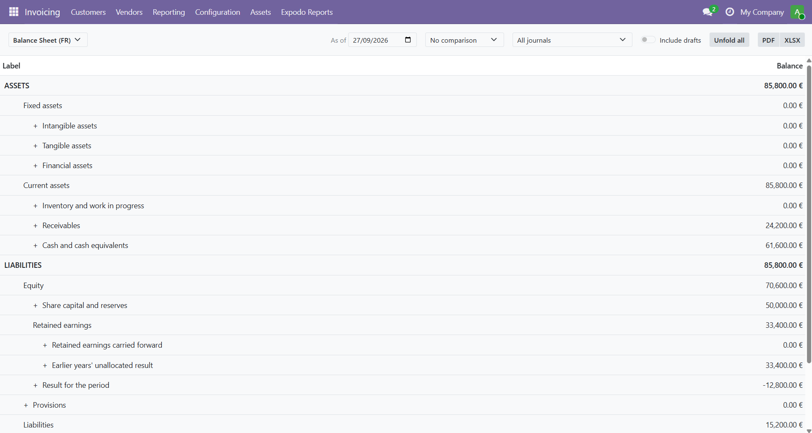
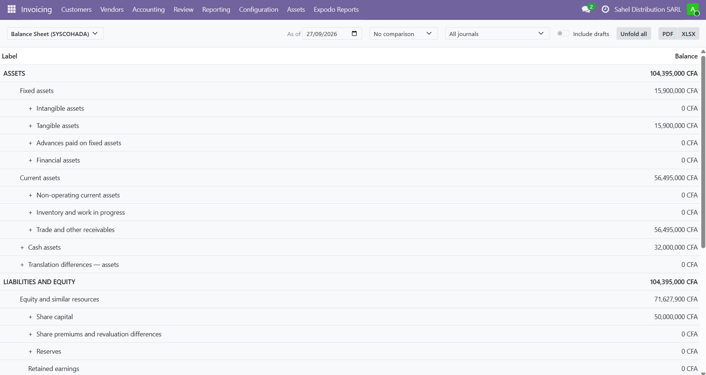
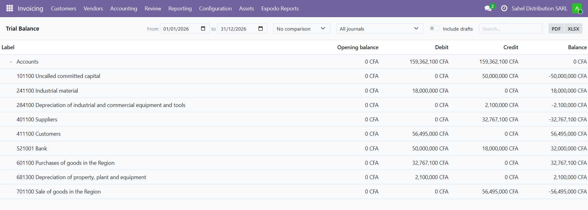
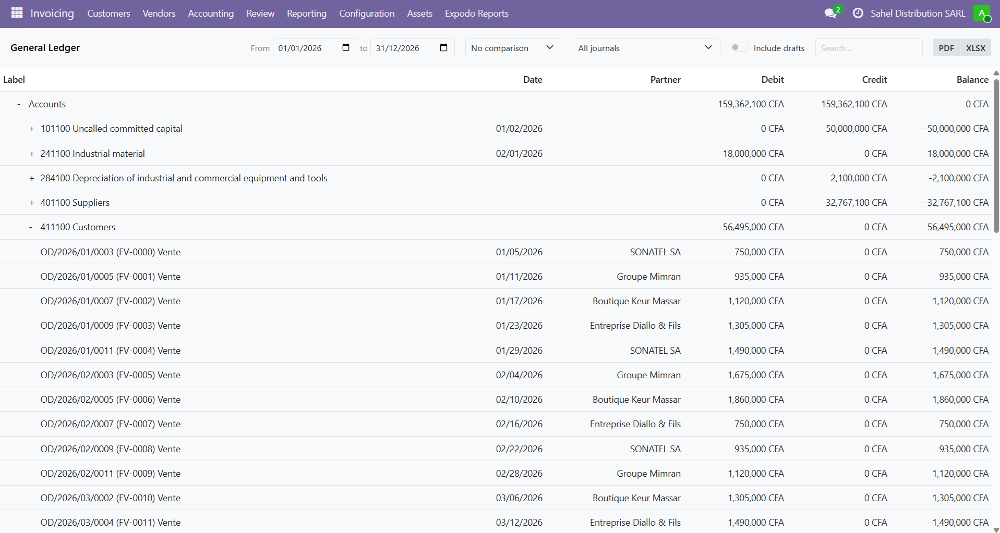

Financial statements, tax returns, year-end closing, fixed assets, reconciliation, budgets and customer follow-up. Fifteen modules, one installation.
Open a statement, set the period, read the figures. Unfold any line to see the accounts it is made of, then click an amount to reach the journal entries behind it. Add the previous period as an extra column. Export to PDF or Excel, where the amounts arrive as numbers ready to be recomputed.
Reads the chart of accounts and report definitions you already have.
Every line unfolds to its accounts; one click opens the journal items.
English, French, Spanish, German, Dutch, Italian, Portuguese.
A French company opens its balance sheet in the plan comptable général format. A West African one opens the same menu and reads a SYSCOHADA presentation, in CFA francs. Neither installed anything extra, and a selector in the header switches between the presentations available to them.


Opening balance, movements over the period, closing balance. Unfold to see every account; click a figure to reach its entries.

Two levels: the account, then every entry that makes it up, with the date it was posted and the partner it concerns.

| Balance sheet | In your country's statutory layout where one exists |
| Profit and loss | Operating, financial and exceptional results |
| Cash flow statement | Indirect and direct methods |
| Executive summary | Activity, cash, working capital and net position on one page |
| Trial balance | Opening balance, movements, closing balance, by account |
| General and partner ledgers | Account or partner, then every entry, with date and partner |
| Aged balances | Receivable and payable, six ageing buckets |
| Customer statement | What a customer owes, ready to send |
| Day book and journals | Chronological and by journal, plus bank and cash books |
| Tax return | Your localisation's, in its official layout |
| EC sales list | Intra-Community supplies by customer |
| National presentations | French PCG and SIG, SYSCOHADA balance sheet and profit and loss |
| Year-end closing | Closing entry and opening balances, created in draft for review |
| Prepaid and deferred | Expenses and income spread pro rata by exact days |
| Currency revaluation | Foreign currency balances at the closing rate, reversed the next day |
| Fiscal years | A first year of fifteen months, a transition, a final year |
| FEC export | French accounting entries file, in the required format |
| Reconciliation | Match entries by hand, or let matching partner balances settle themselves |
| Fixed assets | Depreciation schedules, postings and disposals |
| Budgets | Planned against actual, with the planned amount prorated to date |
| Customer follow-up | Graduated reminder levels, sent to the customers you select |
| Tax returns | Track each filing: checks, filing date, payment, period locking |
| Horizontal groups | Split statement columns by establishment, activity or journal |
| Annotations | Attach a dated explanation to a statement line |
| Tax units | Several companies filing VAT under one number |
Install this module and the fifteen come with it. Each one stays a separate module in your Apps list, so you can keep only the ones you use.
The statements appear under Invoicing › Expodo Reports, for users with accounting access. After loading additional languages, allow a few minutes on first opening while Odoo rebuilds its asset bundles.
Odoo version migrationsMoving your database to the current version, run by our own migration engine. Quote on request: expodo.fr/en/migration |
Custom developmentModules built around the way your business actually works. Write to us: info@expodo.fr |
Developed by expodo.fr